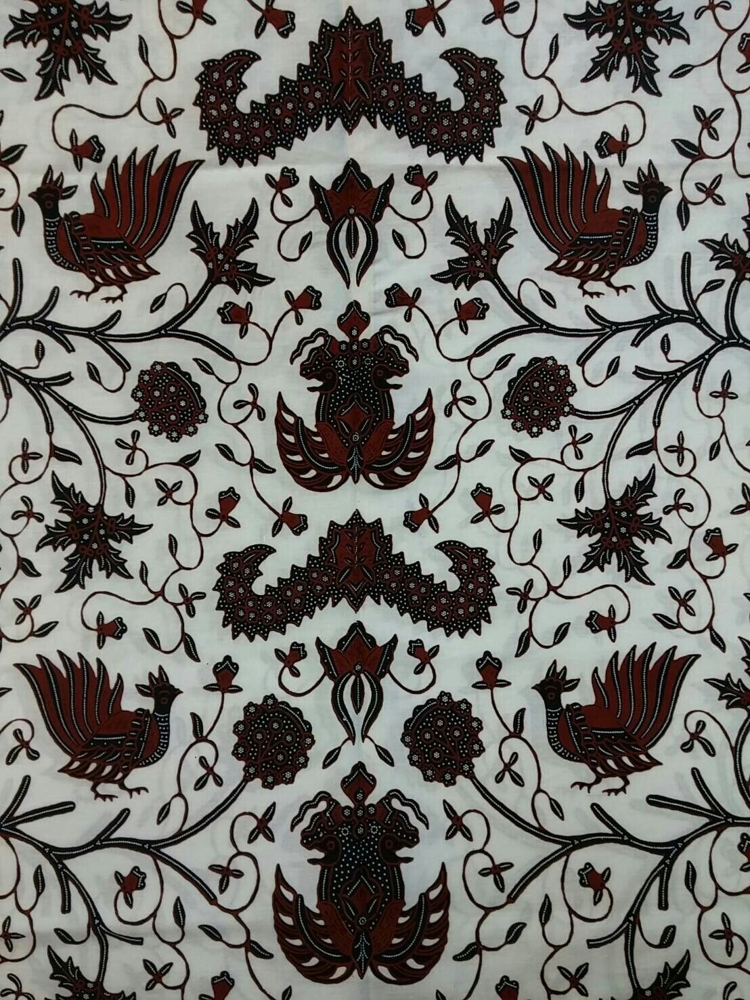
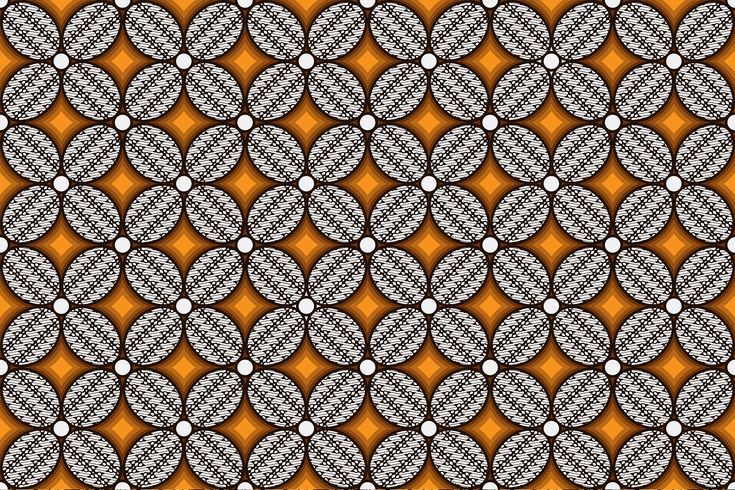
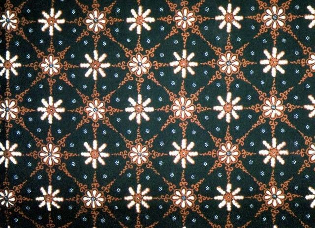

Galeri Batik Tenun Ikat





Merawat Benang — Menenun Cerita, Menyulam Jiwa Jawa yang Abadi
Gabung & Rasakan Seni TenunKampung Tenun Ikat Bandar Kidul merupakan salah satu warisan budaya yang telah bertahan selama berabad-abad. Setiap benang yang digunakan dalam pembuatan tenun ikat menceritakan kisah kehidupan masyarakat tradisional, kepercayaan, dan keindahan alam lokal.
Teknik tenun ikat telah diturunkan dari generasi ke generasi, dimulai sejak zaman Kerajaan Mataram. Para pengrajin dengan cermat mengikat benang sebelum pencelupan untuk menciptakan motif yang unik dan memukau. Setiap motif memiliki makna mendalam yang terhubung dengan alam, spiritualitas, dan identitas budaya masyarakat.
Hingga kini, Kampung Tenun Ikat Bandar Kidul tetap menjadi pusat produksi tenun ikat berkualitas tinggi yang diakui nasional dan internasional. Para pengrajin setia menjaga tradisi ini sambil menghadapi tantangan modernisasi.
Pengrajin aktif di Kampung Tenun Ikat Bandar Kidul
Jam kerja untuk satu kain tradisional
Motif tradisional yang masih digunakan
Simpul ikat per kain (batik ikat)
Pengenalan — Teknik Ikat Pakan Legendaris:
Ikat pakan legendaris adalah seni menyiapkan dan mengikat benang pakan sebelum pencelupan untuk menciptakan motif yang hidup dan bernyawa. Teknik ini menggabungkan ketelitian, ritme, dan intuisi pengrajin — menghasilkan kain yang bukan sekadar tekstil tetapi juga narasi budaya.
Benang dipilih berdasarkan serat, ketebalan, dan daya serap warna. Benang disisir, digulung, dan dirapikan sehingga setiap untai memiliki ketegangan dan kualitas yang seragam.
Motif dibuat dengan sketsa dan pemetaan pada benang. Pengrajin menentukan titik-titik warna yang akan dibiarkan atau dilindungi oleh ikatan sehingga pola akhir muncul saat proses pewarnaan selesai.
Pengikatan dilakukan secara bertahap menggunakan simpul tradisional agar tahan terhadap pencelupan. Tiap simpul menandai batas warna — kerja tangan yang sabar menentukan ketajaman motif.
Pencelupan dimulai dari warna terang ke gelap (atau sebaliknya), menunggu pengeringan antara lapisan. Setiap lapis menambah kedalaman warna dan nuansa gradasi yang khas.
Ikatan dibuka seiring pengeringan, motif muncul dan dikoreksi. Pengrajin dapat menambah ikatan baru untuk lapisan warna berikutnya sehingga motif menjadi kompleks dan harmonis.
Pengeringan dilakukan alami atau dikontrol agar warna menyatu. Setelah selesai, benang ditetesi, dicuci, dan distabilkan agar tahan luntur.
Benang pakan yang telah diwarnai disusun ke alat tenun. Pertenunan menggabungkan pakan dan lusi sehingga motif tampak sempurna. Akhirnya kain disetrika, dicuci, dan difinishing untuk tampilan akhir yang menawan.
Setiap motif menyimpan cerita leluhur, simbol alam, dan filosofi lokal. Mengikuti teknik legendaris ini berarti ikut menjaga cerita yang hidup dalam tiap helai kain.
Praktik langsung dengan pengrajin berpengalaman untuk memahami setiap detail teknik ikat pakan yang kompleks dan penuh makna.
Saksikan bagaimana warna-warna indah tercipta dari bahan-bahan alami dan rasakan pengalaman unik pencelupan tradisional.
Coba sendiri menenun menggunakan alat tenun tradisional (ATBM) dan rasakan ketrampilan yang telah diasah selama berabad-abad.
Berinteraksi langsung dengan keluarga pengrajin, dengarkan cerita mereka, dan pahami dedikasi mereka terhadap seni tradisional.
Ciptakan desain motif Anda sendiri dengan menggabungkan tradisi dan inovasi modern bersama desainer lokal.
Nikmati pertunjukan seni tradisional, tari lokal, dan berbagi pengalaman dengan peserta workshop dari berbagai daerah.
| Hari | Jam | Kegiatan | Lokasi |
|---|---|---|---|
| Hari 1 | 08:00 - 09:30 | Pembukaan & Pengenalan Kampung Tenun Ikat | Pendopo Kampung |
| 09:30 - 12:00 | Presentasi Sejarah & Teknik Tenun Ikat Pakan | Ruang Workshop | |
| 12:00 - 13:00 | Istirahat & Makan Siang (Kuliner Lokal) | Rumah Makan Tradisional | |
| 13:00 - 16:00 | Praktik Teknik Ikat Benang Pertama | Ruang Workshop | |
| 16:00 - 17:00 | Sesi Tanya Jawab & Refleksi Hari Pertama | Pendopo Kampung | |
| Hari 2 | 08:00 - 09:00 | Ice Breaking & Energizer Pagi | Lapangan Kampung |
| 09:00 - 12:00 | Kunjungan & Observasi Rumah Pengrajin | Rumah Pengrajin Lokal | |
| 12:00 - 13:00 | Istirahat & Makan Siang | Rumah Pengrajin | |
| 13:00 - 15:00 | Praktik Pencelupan Warna Alami | Ruang Pewarna | |
| 15:00 - 17:00 | Workshop Desain Motif & Inovasi | Ruang Desain | |
| Hari 3 | 08:00 - 10:00 | Praktik Menenun di Alat Tenun Tradisional | Studio Tenun |
| 10:00 - 12:00 | Finishing & Apresiasi Hasil Karya | Studio Tenun | |
| 12:00 - 13:30 | Makan Siang Spesial & Sharing Session | Pendopo Kampung | |
| 13:30 - 15:00 | Wisata Lokal & Kunjungan Tempat Menarik | Lokasi Wisata Sekitar | |
| 15:00 - 16:30 | Sertifikat & Penutupan Workshop | Pendopo Kampung |
Makanan tradisional yang terbuat dari pisang yang dikukus dan dihaluskan. Teksturnya lembut dan manis alami, sempurna sebagai camilan.
Harga: Rp 15.000 - Rp 25.000
📍 Lihat di MapsLumpia dengan isian umbi-umbian dan sayuran lokal. Renyah di luar dan gurih di dalam, menjadi favorit wisatawan dari berbagai daerah.
Harga: Rp 20.000 - Rp 30.000
📍 Lihat di Maps
Kuah kaldu ayam yang kaya rempah dengan nasi kuning dan daging ayam empuk. Resep turun temurun yang memanjakan lidah setiap pengunjung.
Harga: Rp 25.000 - Rp 35.000
📍 Lihat di Maps
Ikan lele goreng krispi disajikan dengan sambal dan pecel yang pedas nikmat. Kombinasi sempurna untuk melengkapi pengalaman kuliner lokal.
Harga: Rp 30.000 - Rp 45.000
📍 Lihat di MapsLokasi utama workshop dengan studio dan rumah pengrajin. Melihat langsung proses pembuatan batik tenun ikat dari awal hingga akhir.
Biaya Masuk: Gratis untuk peserta workshop
📍 Lihat di MapsTaman hijau dengan pemandangan alam yang indah, cocok untuk istirahat dan foto-foto. Pengalaman menyenangkan bersama alam sekitar Bandar Kidul.
Biaya Masuk: Rp 10.000
📍 Lihat di MapsSitus bersejarah dari era klasik Indonesia dengan arsitektur yang megah. Tempat bermakna untuk memahami sejarah lokal yang dalam.
Biaya Masuk: Rp 15.000
📍 Lihat di MapsPasar tradisional yang ramai dengan berbagai barang kerajinan lokal, hasil panen, dan kuliner. Tempat sempurna berbelanja oleh-oleh.
Jam Buka: 06:00 - 17:00
📍 Lihat di MapsPenginapan dekat dengan Kampung Tenun dengan fasilitas lengkap, WiFi, dan AC. Pengalaman menginap yang nyaman dan terjangkau untuk peserta workshop.
Harga: Rp 150.000 - Rp 200.000/malam
📍 Lihat di MapsRumah keluarga lokal yang nyaman dengan fasil sarana dasar. Kesempatan untuk berinteraksi langsung dengan keluarga pemilik sambil merasakan kehidupan lokal.
Harga: Rp 120.000 - Rp 180.000/malam
📍 Lihat di Maps
Hotel dengan standar internasional yang menawarkan fasilitas premium, restoran, dan layanan 24 jam. Opsi terbaik untuk kenyamanan maksimal.
Harga: Rp 250.000 - Rp 350.000/malam
📍 Lihat di MapsFasilitas asrama khusus untuk peserta workshop dengan kamar bersama atau pribadi. Harga paling ekonomis dengan suasana persahabatan antar peserta.
Harga: Rp 80.000 - Rp 120.000/malam
📍 Lihat di MapsJalan Tenun Raya No. 45, Bandar Kidul, Kecamatan Sentral, Provinsi Jawa Tengah, Indonesia
Senin - Jumat: 08:00 - 17:00
Sabtu - Minggu: 09:00 - 16:00